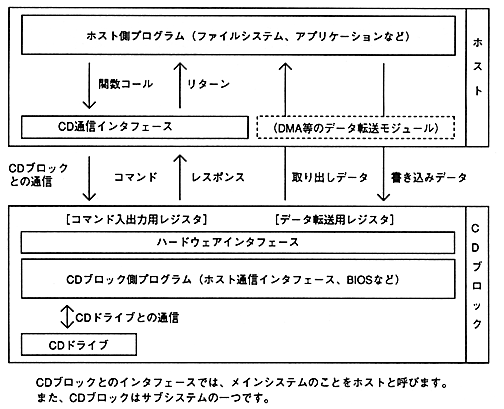

Return to previous page ｜ Return to menu ｜ Go to next page
-
1.2 System configuration
- The system configuration related to CD is shown in Figure 1.2.

Figure 1.2 CD-related system configuration
-
(1) Communication with CD block
- The host and CD block communicate (command / response, data transfer) using registers on the hardware interface.
The command issued from the host to the CD block is called the CD block command. It is usually abbreviated as “command”.
-
(2) CD drive
- The CD block periodically communicates with the CD drive and controls the CD drive in response to commands from the host.
CD drive supports CD-ROMXA standard and multi-session. Switching between standard speed and double speed is also possible. (Standard speed is automatically set during CD-DA playback.)
Return to previous page ｜ Return to menu ｜ Go to next page